Title : Don a research
Objectives:
To prove that she is not only someone who introduced me Asian drama, not only someone who helped me with my blue hair , not only somone who helped me with my towed Activa . But her confidence, grace , personality is something I aspire
to have some day .
Hypothesis:
The quote " beauty attracts the eye but personality captured the heart" she probably owns it .
Materials Required:
Don , her phone , boat bluetooth earphones, coffee , blue bag, sleeping mask , Shein , red bowed chappals
Methods:
Participant observation
Procedure:
First time was my towed Activa and the way she was ready to fight for a person she literally heard from her brother two hours ago . Second time was when the blue on her hair was recent and she was near my apartment ( location will
not be known) to pick her brother up . I remember complimenting her hair while she was standing on the left side of the parked car. Third time was when she came over to my house at West End Village apartments to make my hair blue
. While her brother left us she was successful at small talk and also paid me a visit later that day to see if the colour was perfectly applied. Fourth time was Soham's birthday where I just told her about my obsession of Chinese
drama. She can pull off velvet tops and bright lipsticks. McD has been the place where we met and talked a lot and where I discovered coffee obsession. The moment when she fought with Ketaki when Ketaki thought her life was unfair.
She advises us all about all important things and cares for us the same . The time at pirangut when we were dancing together. Findings: First incident was about giving love (#giveforlove). Second incident was all about confidence.
In the third incident she proves she is a successful perfectionist and a non-awkward situation maker. Fourth incident was a mark of the begining of a friendship. Next is also about confidence, beauty and grace. The later part is
about her values and the beautiful characteristic of not giving a fuck about what the other thinks.She tries everything she wants without the fear of peers.And lastly she displays Mother-li-ness and her adorable child like behaviour.
Conclusion:
She has an incredible personality and impeccable beauty. She is no more a friend's sister . She is my amma . But this amma also has a child in her, (do not jump to conclusions at this statement) she has a child-like side, which is
so very adorable. Happy Birthday to my nobel prize winning reasearch . 我爱你.
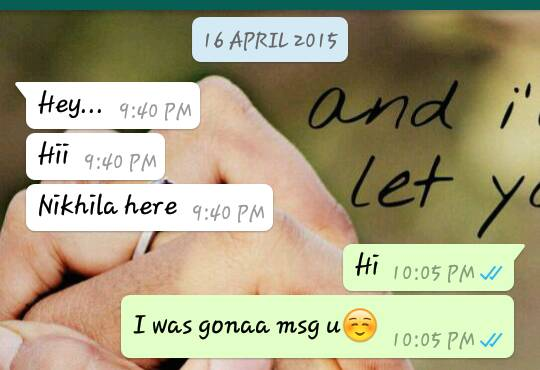
It's been five years. I can't believe it. It feels like I have known you for five lifetimes. KSHITIJAAAAAA, where do I start?! These 5 texts are where our story started and rest has been history. ;) From 2014 Nov to 2015 April, I had
only heard about you from my family. My brother used to tell me about you, my Aatya used to constantly make it a point to mention you in every conversation we had and to be honest I was a bit jealous.. why is my family always talking
about you? How is my brother so amazed by you? I wanted to know more. Finally I decided to text you on your birthday and what did I know that I'll find my solace in you. I had no idea we would come such a long way. And I have no
complaints. I thank God for playing his small game and making sure we stick together like moth to a flame. (Shit what an example I have given, lul) We have been through hell and back. Together. And I hope I can be with you in every
small or big way in your life forever. ❤
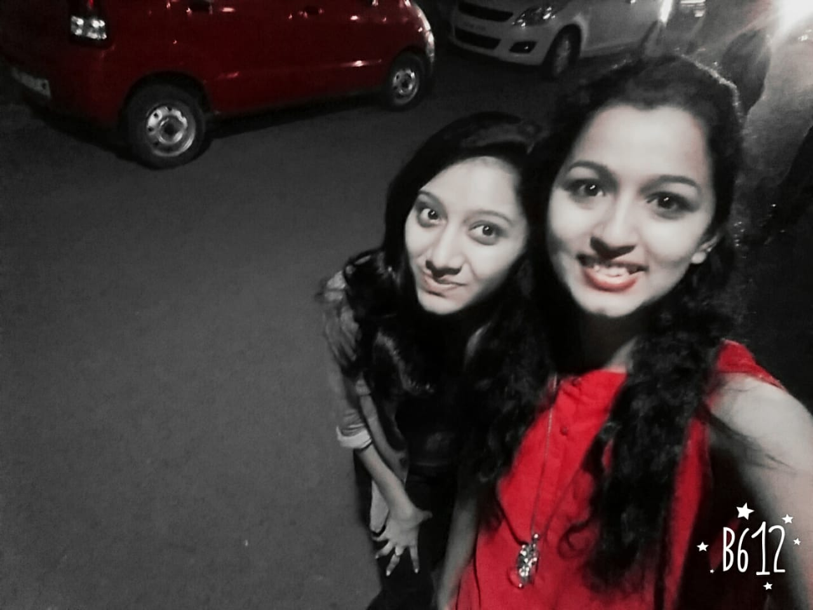
This is the first time we met in Kothrud. Even though it was for 15 mins only, it was enough. I think this is 2015 Diwali. Almost 7 months after we had started talking and had become virtual buddies. Hmmm...I sense some awkwardness
in this picture. (First time meets are always awkward for me, you are a by far the only person I know who can turn small talk into deep conversations. You gotta TEACH ME) We are looking like babies here. Shit. Two peas in a pod.
🤣 PS : I had never imagined you to be sooooooo tall. I was/am the shortest person when I hangout with you guys. 🙂 Huh.
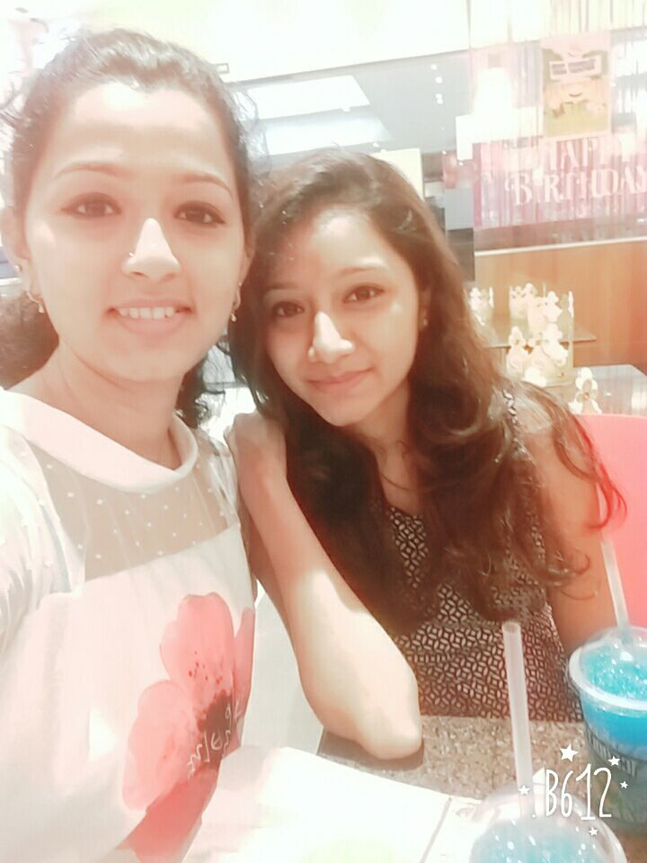
Second meet. Burger King, Phoenix Marketcity, Viman Nagar. Well it wasn't until this day we had properly "hung out". I was still very awkward during this meet. I don't know if you knew. You had brought MAD OVER DONUTS at my brother's
house and for the longest time my sister used to refer to as "Donuts wali didi" 🤣🤣🤣🤣 As you know, I suffer from STML, I have very faint memories from here. All I remember is that we had burgers and crushers drink and took a
lot of pics in the car and in the food court. Also, all my cousins accompanied me which I did not want, I wanted only you and me to hangout. 🙄🤷🏻♀️
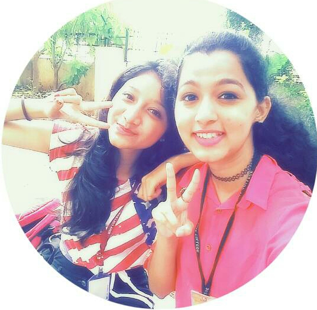
I had made you wear a fake id of my clg so that you could enter my clg. 😌😇 First official MUMBAI meet 😍 I think on this day you met anvita and Ruta too for the first time. You were going through a very very rough time, I remember
you were crying in the clg's garden. :'( I thank god and Rahul for helping you come out of the hell you were going through. Phew. From where to where. It's really unreal.
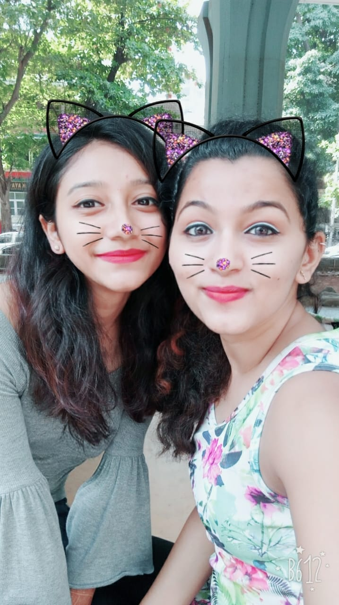
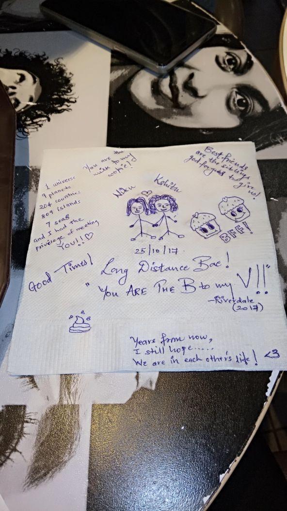
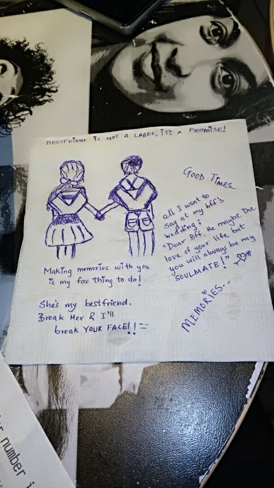
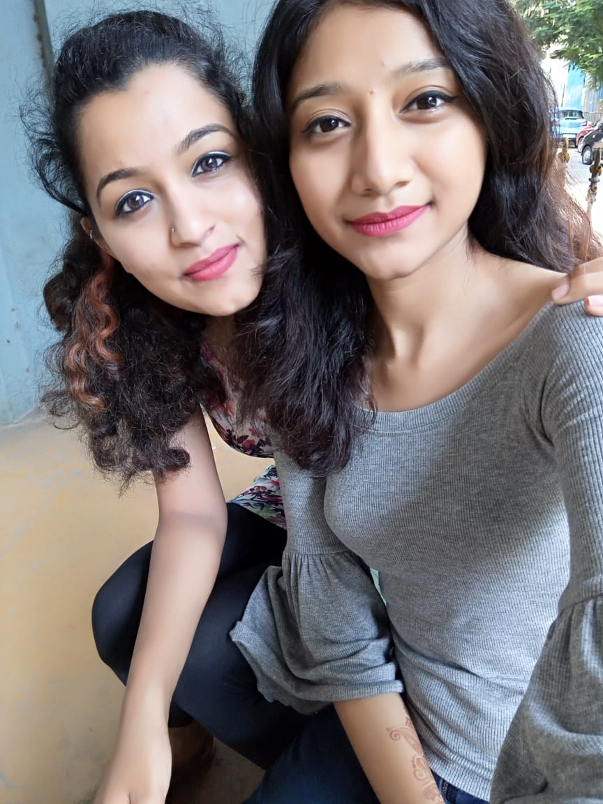
Ayeeeee this is Dadar bridge hangout day!!! It's a spot of couples to do things which they should be doing in closed rooms, lol idk why and how did I take you there!? Dudeeee I have so many photos from this day, we also sat in the
dadar MCD all day lonnnggggg, drew on tissue paper. I could feel that we had come so so close, you had become so important in my life. Uff I can't find proper words to describe us. I have tears in my eyes, ahhh such nostalgia.
🥺
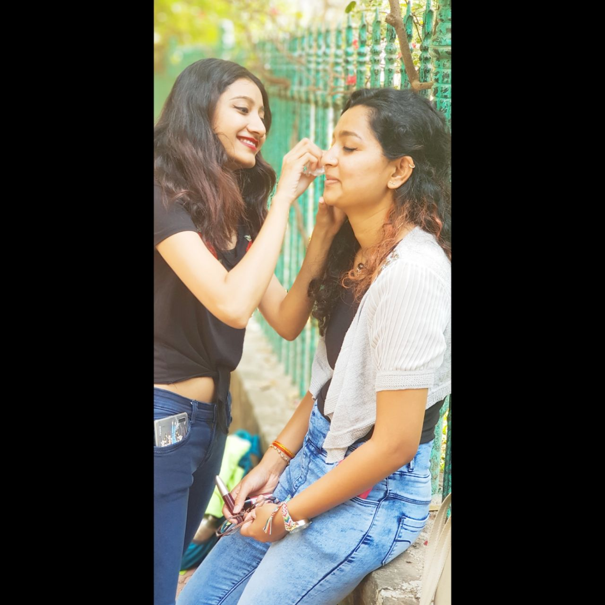
First time I met Rahul. 😇 You had come to Mumbai taking such a huge risk. I can never forget. I hope I am able to reciprocate in the same way some time soon. Oh I remember how drunk we were, damn. I also did your makeup here!!! Omg
😭❤️ Thanks Rahul for clicking this moment. 🥺
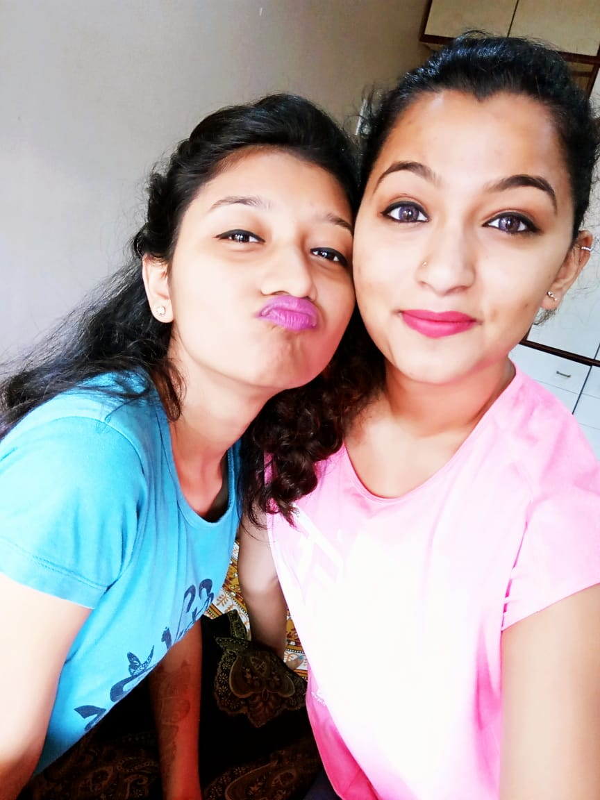
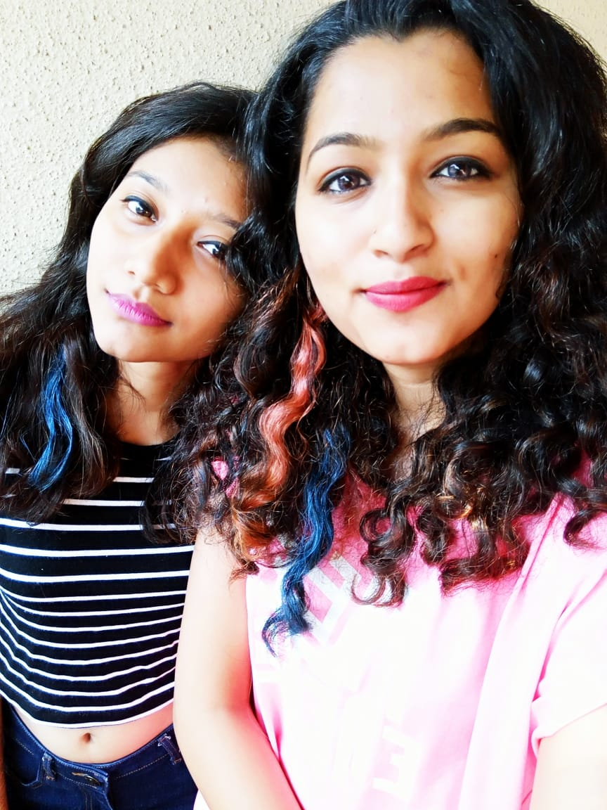
First time you had come to my home! Met my MOM. We had coloured my hair blue (only one strand though) What did we do next? Fuck I really don't remember. After reading this pls call me and remind me. 🙈
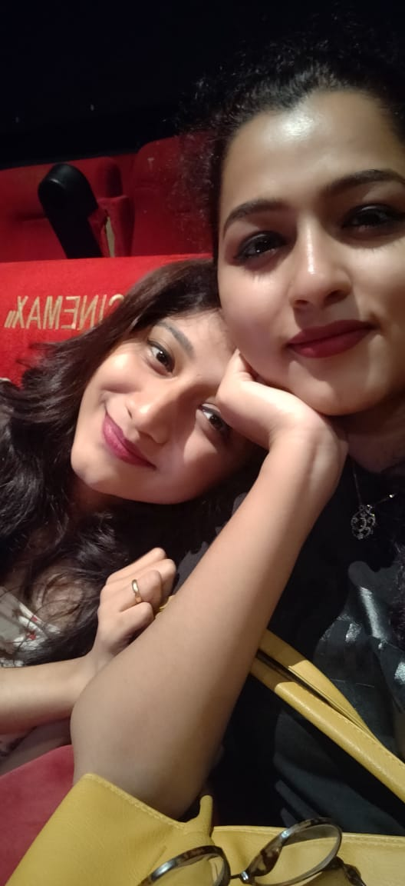
First time stay over at my place! We watched Mumbai Pune Mumbai in this shady theatre. We walked A LOTTTTT. We played dress-up. Clicked pics. We woke up early in the morning just to go to Marine Drive (and also to meet Rahul). We travelled
in the local. Ate in a Parsi cafe (it was real yum) And what awesome pictures we had clicked that day!! We ate gola at Girgaun Chowpatty in Mumbai's heat. Heh.
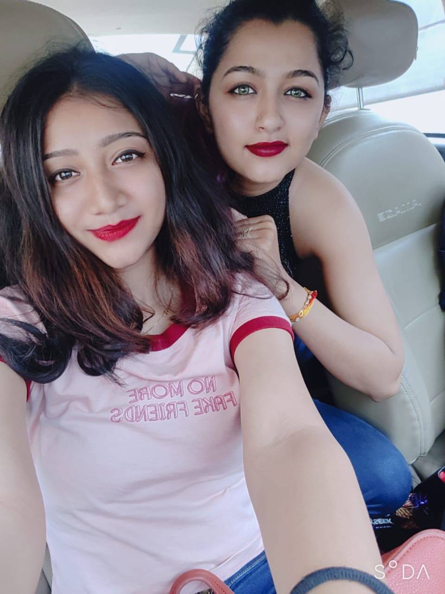
Our last meet! I couldn't believe you guys managed to come to my 🏠 from Pune by Rahul's car. Here we look like adults. Just compare out first pics with this pic. Hahahahaha. Thank God for puberty. Hiranandani Powai wala drive was
the bestestestest. So so much funnnnn🥺🥺🥺🥺 Pls meet me soon. 🥺🥺🥺
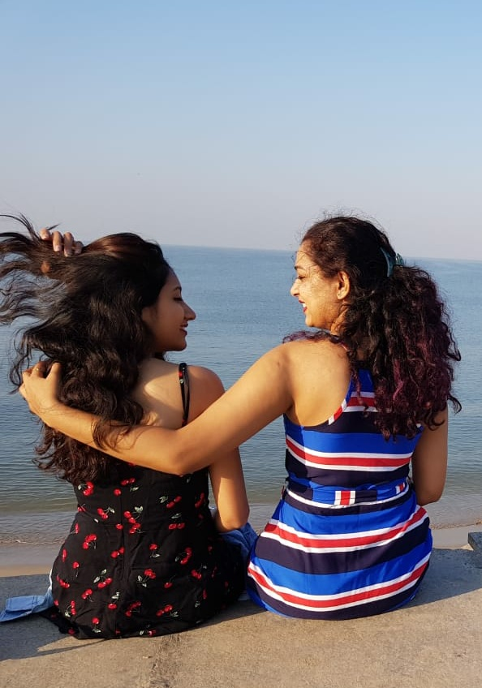
Finally I would like to say, HAAAPPPYYY BIRRTHDAAYYYY TOOOOOO YOOOOUUUUUU, HAPPPPYYYYY BIRRTHDAYYYYY TO YOUUUUUUUU...🥺🥳🥳🥳🥳 We have many many pics together, we have many other memories together and I am sure I have missed a lot
of those in the previous pictures. Ah, what do I say more... Please keep me included in all aspects of your life, let me be the diary where you can write anything and everything. You are the person with whom I have shared deepest
and darkest facts about me and my family. I hope you will continue to be my first call in crisis and in happiness. I am so so proud of us. It's not always been a smoot sailing for us. We FIGHT. We CRY. But then again we find a
way for coming back to each other. And I wouldn't want it any other way. Really. Our choices are also very very different but as it is said, opposites attract. I have never felt a friendship which is this pure. ❤️ Thank you for
being my confidant, my mother whenever needed, my sister, my cupcake, my survival kit, my girlfriend, my bestestestest friend, my family. I LOVE YOU ❤️🌼
Happy birthday Kshitija! I remember we used to be in contact casually but rarely speak in the initial days of our graduation. It was only after our school meetup in Jan '18 we really connected. I remember you owed Ajinkya money and
he asked you for a treat rather than transacting money. So after that, each of us ended up giving a treat to each other! From that time, we started meeting frequently and enjoying our small little space. All of us would usually
meet at my flat, Ajinkya's flat or McD. One thing that remained constant all the time was immense laughter. In a very short period of time, we became quite comfortable with each other, probably also because of the fact that we
are schoolmates. I moved to Viman Nagar and now we don't meet quite frequently as we used to earlier which I really miss, but we'll still try to meet more once Corona is gone. I really enjoy when I am with you and our group, it's
a wonderful time.
hi kiya so kudos to you only😂🤘. Seriously, do you get jab apn gandulog saath mai baithte hai to time ka andaaja kaise nai rehta every single time for real😂🤦. Topics kabhi khatam hote hi nai hai😂. Tere doremon wale baalon pe charcha😂,
bitching about people obviously iske bina to kata hai hi nai apna😂, but all in all we are always there for each other, personally merko tumlogo ke saath bolne se pehle ek baar bhi nai sochna padta i can seriously say whatever
comes to mind without thinking inko kya lagega for me this is the peak of being friends. Bas senti nai karta terko jyada, aur haa apne rahul ke saath teri udana kabhi purana nai hoga btw😂. Many happy returns of the kshiti🥳, i
know quarantine birthday hai tera it sucks real bad, but ye sab khatam hone ke baad gandu log reunion is fixed😂🤘.
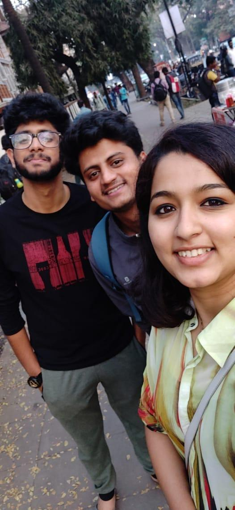
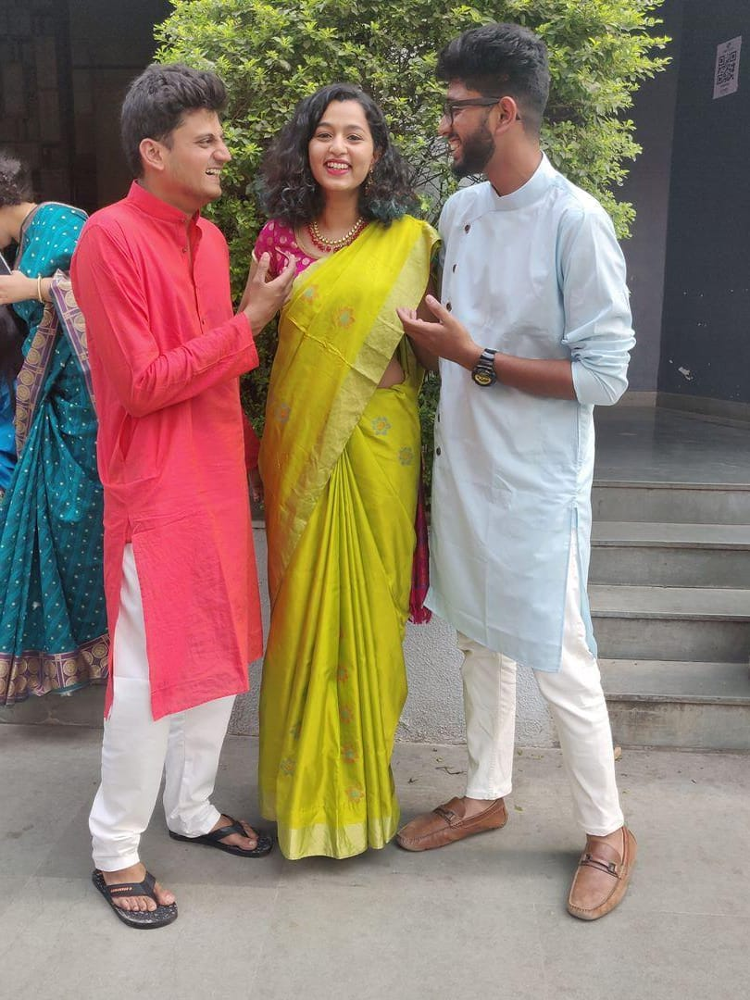
Hey Kshitija! Wish you a very happy birthday!! You being my closest friend in college, we have a myriad of memories to cherish. And the best part is we haven’t failed to capture any of them! :) I guess the best one is our goa trip!
Of course, it has to be :D From deciding what to carry to what to eat at the restaurants there, everything was fun. I remember how excited we were for it. Doing the count down since the plan got finalized. And then the day finally
arrived! We did the last-minute packing also together at your place. Though after reaching there, our roommates combo was a little weird but it did not matter because we were together. Cooking breakfast at the villa together was
a completely new experience. The two-wheeler rides on the roads of goa were amazing! Especially the late-night rides where in there were actually patches where there was absolutely no light and the GPS asking us to take nonexistent
turns at such times! And the next day we take that kachha road turn :P Quite adventurous! Talking about adventure, remember the adrenaline rush before parasailing?! Woohoo! :P The night at Baga beach couldn’t have been more beautiful!
And dancing crazy at LPK! Also the petty fights between our classmates were quite enjoyable! :P We had the craziest pool party ever in the world’s largest pool :P I guess this was the best time that we had together. We came back
with heavy hearts but a lot of memories and beautiful photos! The best part of our friendship is that we almost think on similar lines so we never really had any difference of opinions. Every year just got us closer than before.
We were there for each other in hard times and we being us, I am sure this is never going to end! :D
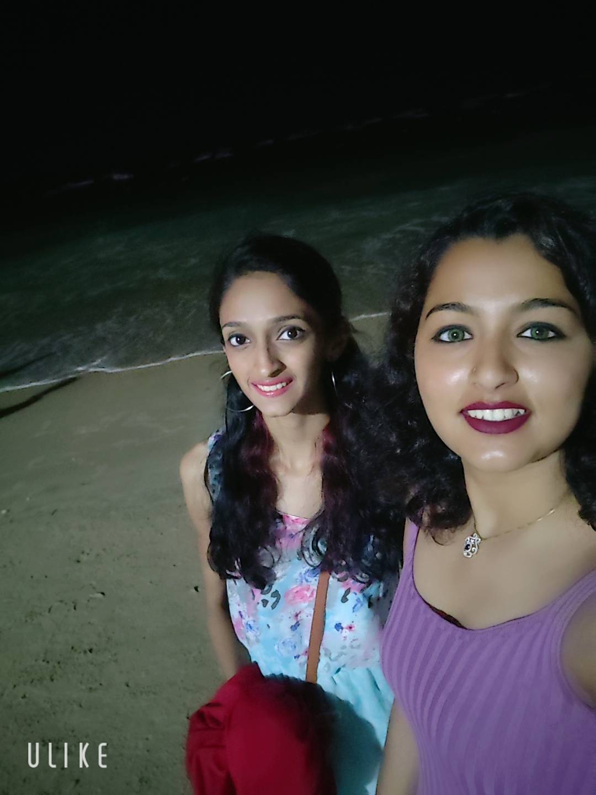
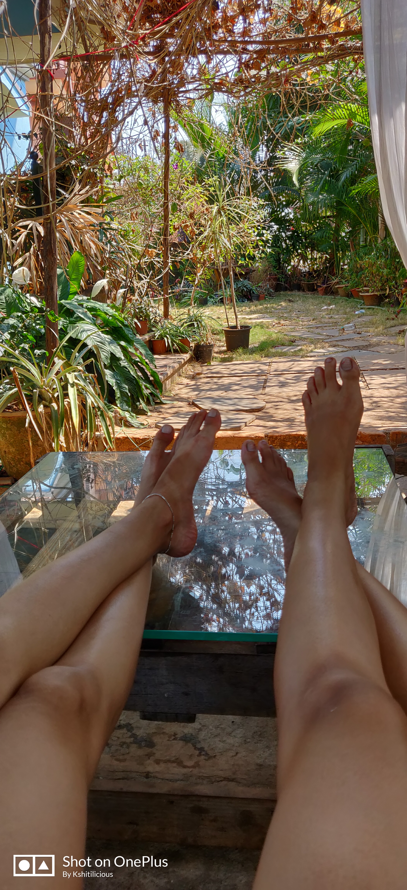
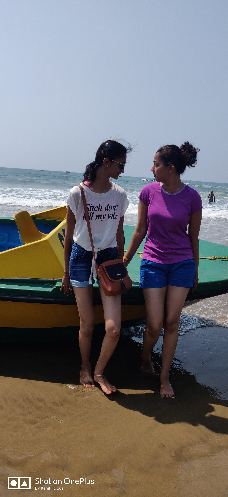
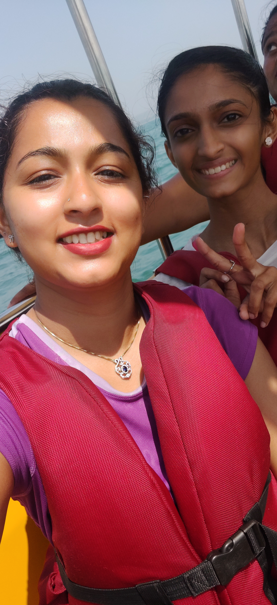
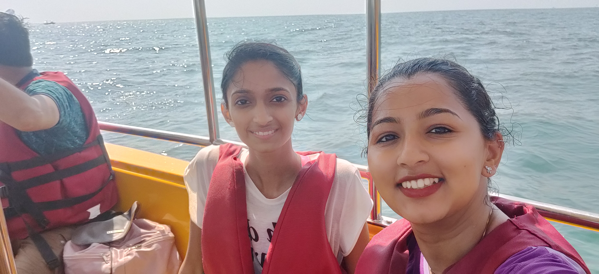
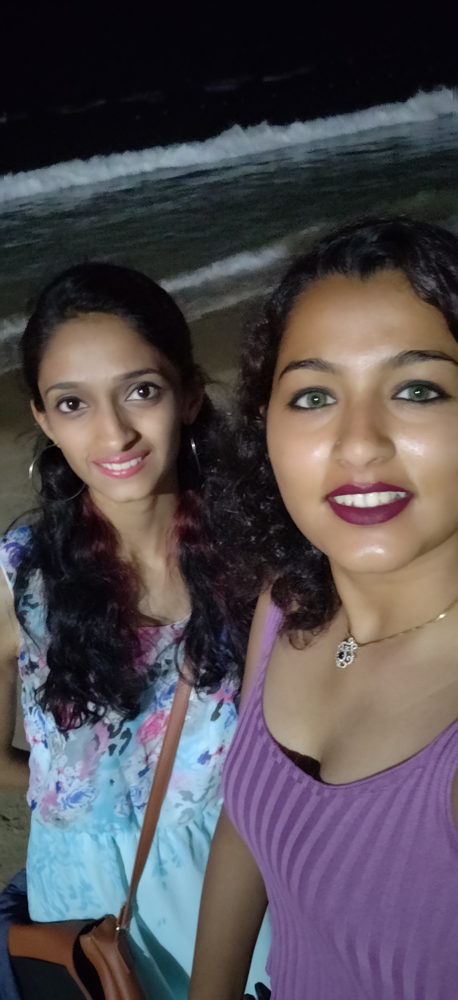
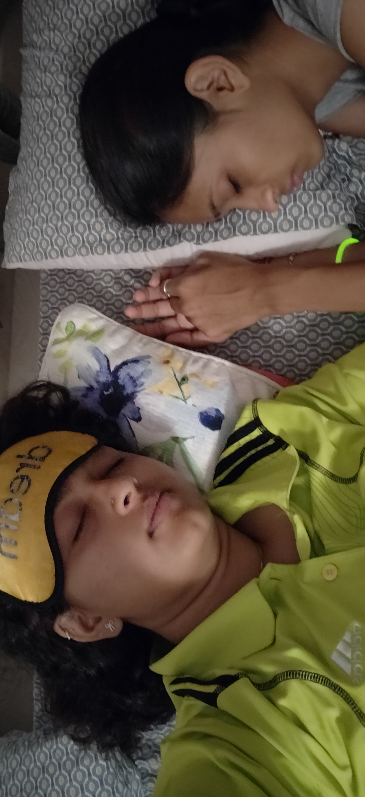
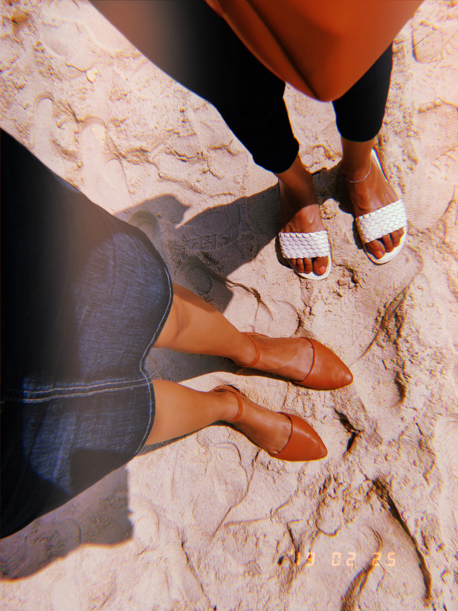
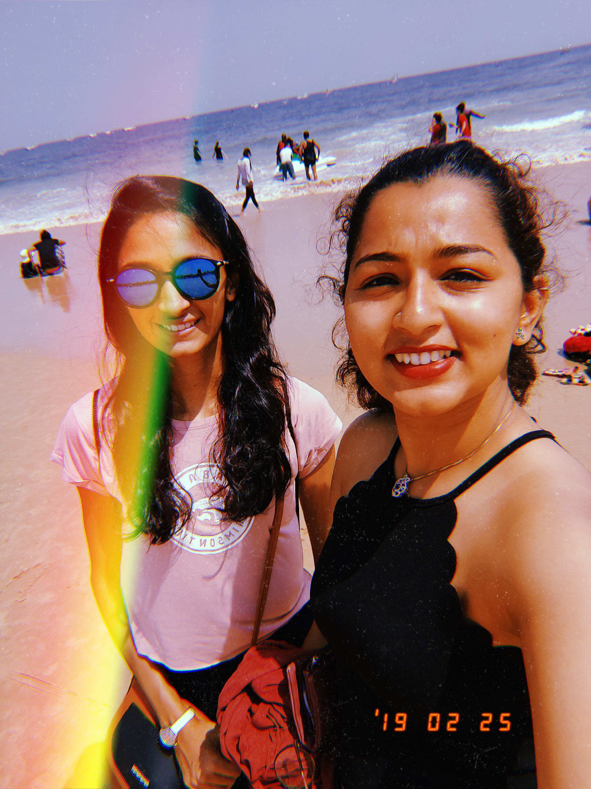
From my dearest sister to business partner this journey has always been the most memorable 💜I’ve never seen a person as strong as you,which always gives me power and strength.For the past few months we might have faced the worst conditions,but
this downside helped us understand true colours and made us strong.The bond we share became unbreakable.I sure we’ll rise up soon stronger than ever.The memories we make will always be the best.It’s a blessing to have such irreplaceable
sister 🥰 ~Tan
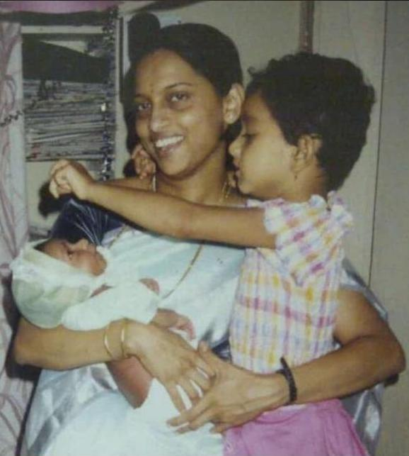
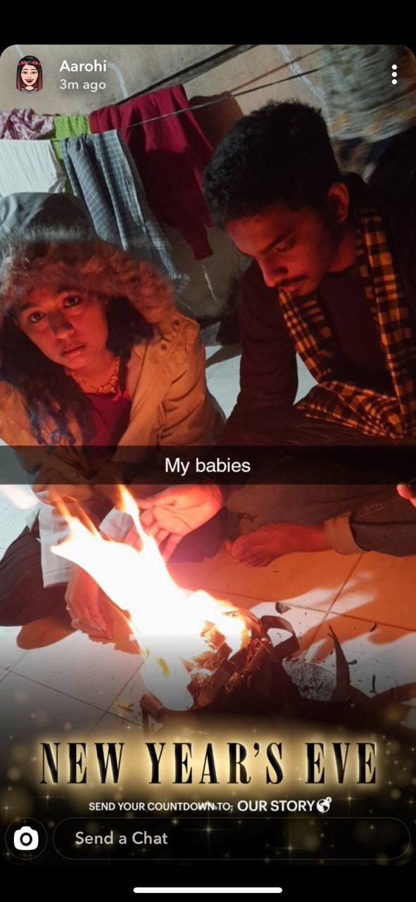
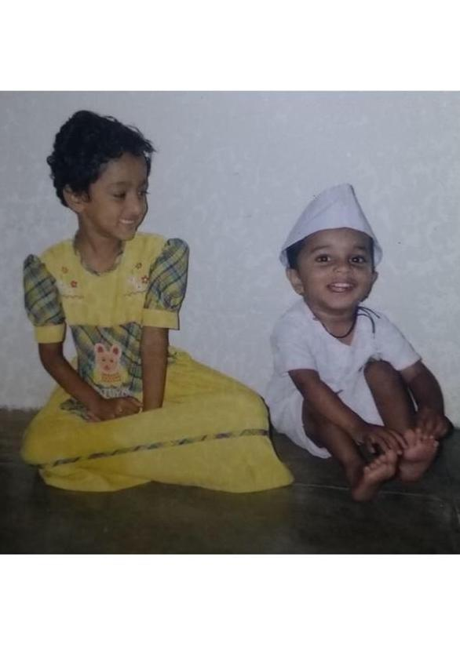
쉬투 베프 that's how I saved your number in my contacts. It's the last in the list but the only one I saved with a nick name. Yeah!! Because you are really really special. I still remember kshitu in a beautiful gown with perfect make up
and to the point liner in kalra. I was dumb struck! Cuz I barely knew the sequence or even the names of any cosmetics. Sort of envied you and thought that you were out of my league! That day I had no clue that I would be bffs with
this gem of a person! I fall short of words to describe millions of memories that we share. So here's just an attempt to let you know what you mean to me! Yes, we became friends due to a lot of funny and silly stuff but the bond
grew stronger when we actually shared sorrows. Today you are my go to person. You've been there for me even when I couldn't be there for myself. You made me believe in leap of faith. I swear I couldn't be what I am today without
your support! You've seen so much struggle in life, yet faced it with a graceful smile. You inspire me to be bold but beautiful. Some one I look upto in life. My warrior princess. I want you to know that you are in my prayers and
wishes always. Today is the day this soulful person was born I want to wish her tonnes and tonnes of happiness that she deserves! Keep shining💫 ~ Much love from afar (Your patented) Sanju❤🥰😘
Hi Kshite, Firstly many many Happy returns of the Day....May all your dreams come true and have prosperous life ahead....RAHUl asked me to write something about you I was thinking 💭 what to write....I don’t know how our bond got so storng unexpectedly
after reunion but fortunately I got one more special friend like you❤️ where I could share my feelings ,thoughts and make lot of bakchodi 😂....I guess our sunshine and all matches so we got so close to understand each other 😂....But
whatever it is , I really enjoy your company may our friendship go life long and bond may become more closer and more tighter ... Happy Birthday Model💓😍🍾 -Ajya
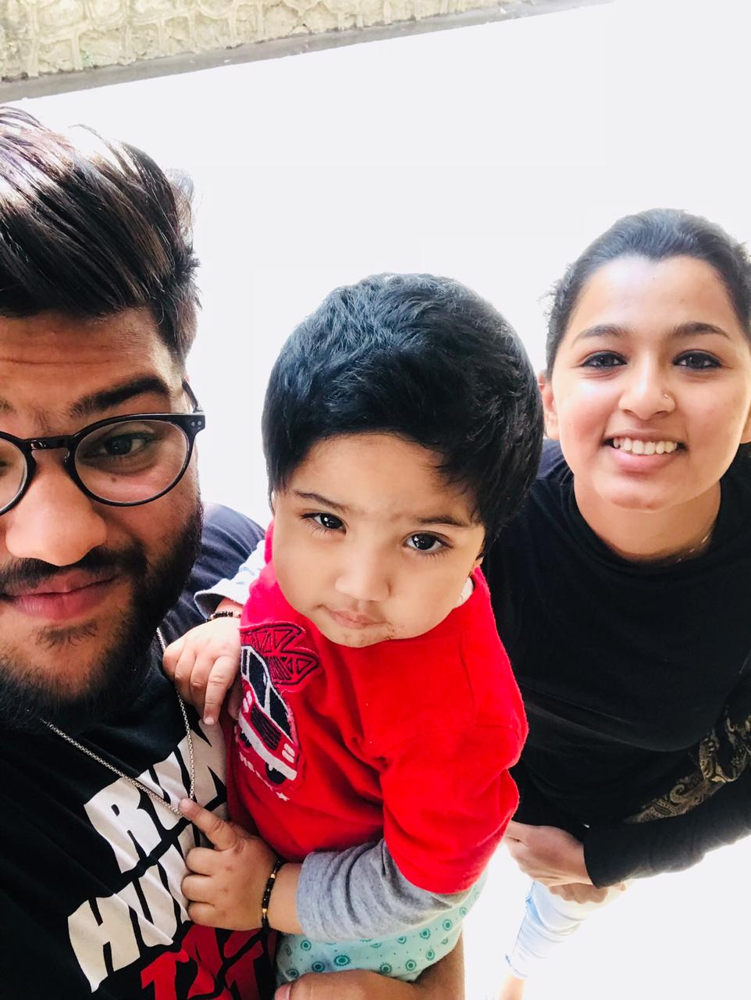
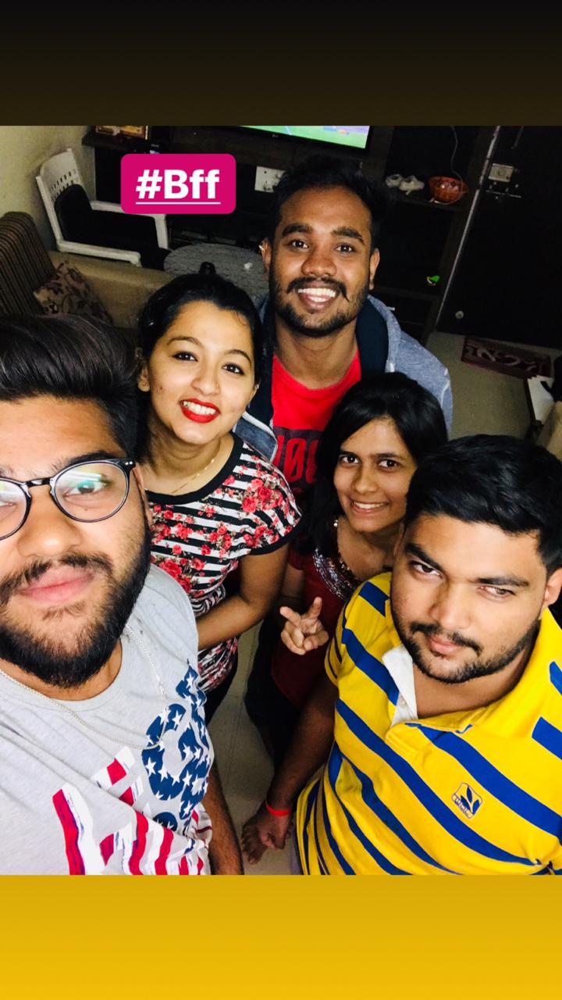
Happiest spoiled, unexpected yet a birthday to my dear so called 언니 Kshitija. Like your every birthday has to be unique.Be it manali, that stupid rainy day or this lockdown. Whatever the situation I, yes me so called 여동생 manage to be "present" on your
birthday. We keep'in the tradition going. So turning 23 this year and acting like 30(mature mom) is not a new thing for us. Okay!!! Jokes apart.. You have been immensely strong in the last few years. Strong enough to handle the
whole family. Always been that superwoman i always envied about. Remember whatever happens I yess me will always be by your side. You can count on me like 하나, 둘, 셋 and i will be there.
행복하게 지내라.
안전하게 지내라.
대담하게 지내라.
대담하게 지내라 아름다워라.
우리는 하나다.
Always remember 너는 여왕이다.
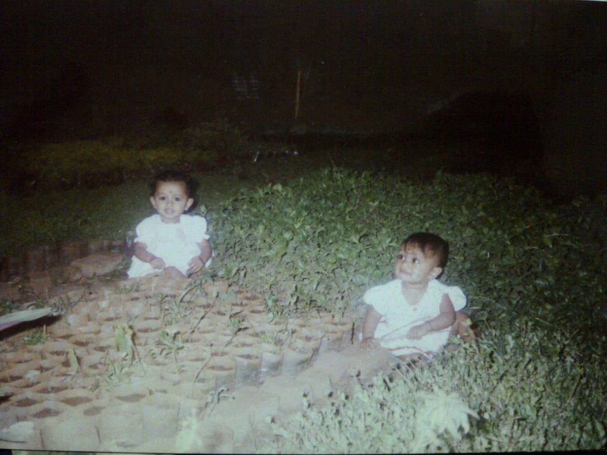
There's no short without tall,
There's no thin without fat,
There's no dark without fair
There's no 여동생 without 언니,
There's no dumb without smart,
There's no straight without curly,
There's no messy without clean,
There's no pasta without pizza,
There's no cocktail without milkdrinks,
There's no neon without plaincolor,
There's no listener without speaker,
There's no sehun without chanyeol,
There's no Aarohi without Kshitija,
Always remember 너는 여왕이다.
I met Don for the first time at Sakshi's birthday party and in that moment I understood why everyone referred to her as Don. After that we interacted during the trip to Mumbai. She was the maturity that the group needed. Be it quick decisions or patience,
it was because of her the trip turned out to be a blast. But the day we really connected was when we interacted for over two hours. From shopping to savings, from lifestyle to mindset there was nothing that we didn't talk about.
Her understanding of each subject and a completely unique perspective makes her a great conversationalist. I have seen her ferociously protect loved ones and stand with them through storms and I have also seen her being the most
empathetic person in the room. She puts life into the saying: You don't have to be cruel to be strong! She is also the perfect guiding light. Here's to the strongest and kindest person I know: Happy Birthday Don❤️
कुछ रिश्ते होते है खून से जुदा,
मु बोली नही अब सगी बहन लगती है।
थोड़ी बड़ी है मुझसे उम्र और तजुर्बे में,
फिर भी बचकानी हरकतों से दंग करती है।
नाम है उनका उनके क्षेत्र मे,
जिम्मेदारियां संभालना
अच्छे से जानती है।
डाटना उसका मुझे खटकता है कभी,
पर डाट से भी उसकी ममता झलकती है।
पता है उनको कैसे संभालना दुसरो को अपनी तरहा,
जान पहचान की जरूरत नही बस घुलमिल जाती है।
याद नही चंद
महीने हुवे उनसे मिलकर,
लगे जैसे सालो सो उनको पहचानते है।
बस कुछ लिखना था उनको दिलसे,
अपने जज़्बात बया कर रहे है।
खुशी दे रब आपको हर दफ़ा
जन्मदिन की शुभकामनाएं देते है।
kshtija mohite...okay so 1st bhetlelis ti bhet ch epic hoti dokyat bambu padun introduction zalela😂😂😂 tevhapasun ch I guess ti glass cha palikade vedyasarkh nachna chalu zala asel😂...tyanantar gappa tappa chalu zalyaa tu saglyanna kukka ch addiction
lavla and mag kay roj bhetna and harsh la jana🤭 tyanantar mag pathkacha trip madhla kaustubh cha kissaaa😂😂😂😂😂😂😂😂 Nantar thodasa contact kami zala...kami zala mhanje almost 0 ch but I feel proud ashya tough situation madhe
me tuzya and tan cha sobat hoto and Ik tumhi pn mazyasobat asnarch ahat but hya situation madhe kay zala kay mahiti evdhe sagle apan close alo tu me rahul deven nitin tan sakshi gayatri... Imagine pn kela navhta asa hoil but kaye
dorr toh uparwale ke hath meinn haiii hum toh rangmanch ki kathputliya haiii❤️❤️ ani aaj kay mag Bdy vaigare hayyyy mhane mag wish ekach ativar karenn mazyaashiiiiii changlaaaaa bolllissss tarrr👊🏻👊🏻👊🏻👊🏻👊🏻👊🏻👊🏻😆😆😆😆😆
But he tom and jerry wala bond ch bhaariyeee he asach rahudeee Happyyyy walaaaa Birthdayyyyy Nagingingigngingingingingingingin😂😂😂😂 Ashich mazya sobat kayam rahaaa bhagwan aapko sab kuch de jo aap mangoo❤️❤️❤️❤️❤️❤️ Quarantine
zalyavar pahileee tuza birthday celebration karuyaaa😍😍😍😍😍😍😍
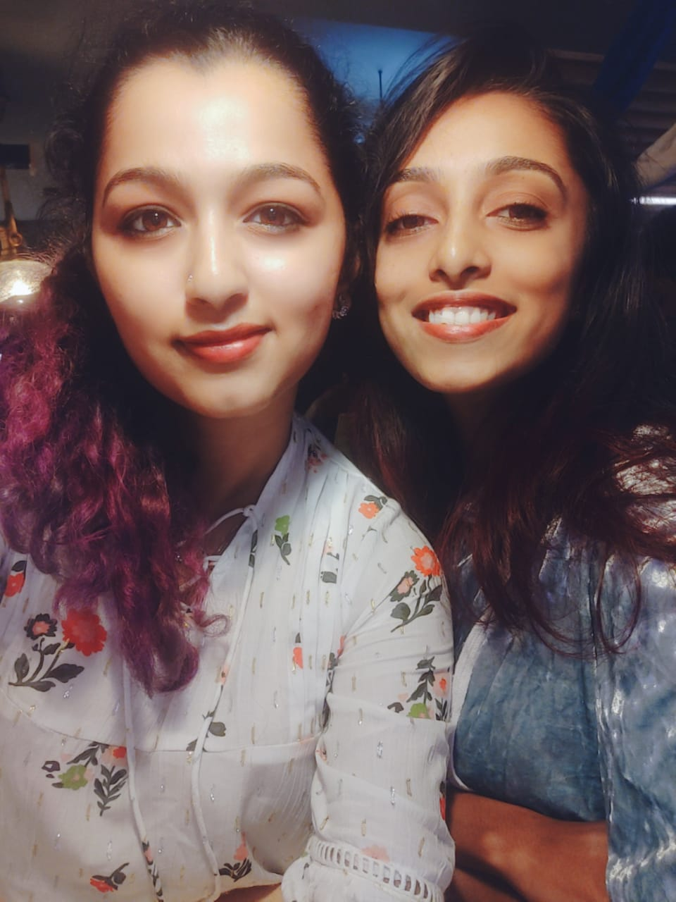
People come n go, many friends change like weather but Sisters are by each others side forever. There is no single but tons of memories we've made with each other since childhood ,especially in our trips n tours which I still cherish. And those are worth
cherishing because you are my cousins. (our group pic) One of the recent n happening moment with you was our visit to Aapli Mumbai. Our first late night "only girls" ride to Juhu was so amazing. It was really a thrill for us. Even
if we were the only two we were enjoying that freedom to ride late night (Juhu pic) ( railway track pic) This was the first n best experience I ever had sitting at the doorstep of the train instead of seats. You gave me that courage
and we finally sat there holding our hands so tight.And we enjoyed such a beautiful view of lonavala ghats with those clouds settled. And there are many more wonderful memories which you have given and I wish we make more soon
in 2020. You are such a person whose presence makes the surrounding so happening and lively. No one can get bored by your company because you are so excited in everything. You have always encouraged us for lot things which we wouldn't
do on our own . Even if we have different taste rather we're whole different like sun n moon but I love you to the moon n back. (childhood pic) You always take efforts to do something special for others but unfortunately we couldn't
do much on your birthday this year . So here's a wish to you Happy Birthday Babe Your wishes will definitely come true. God bless you Lucky charm
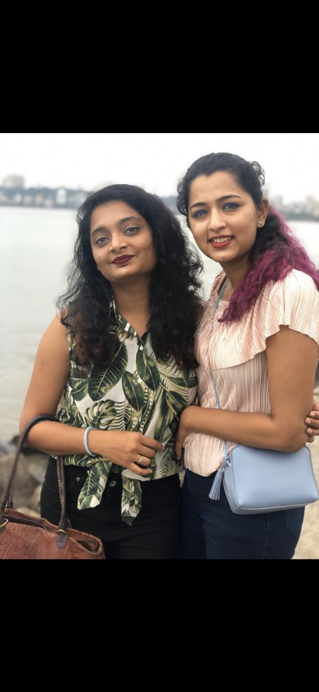
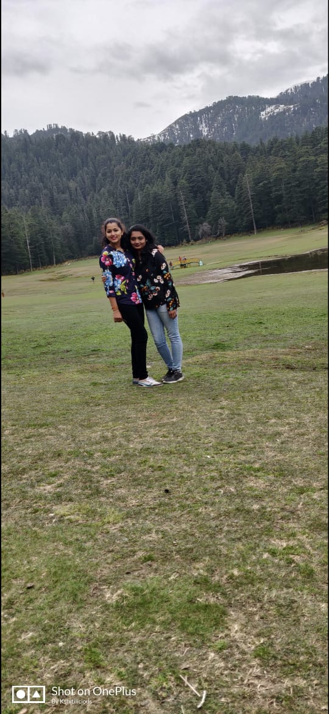
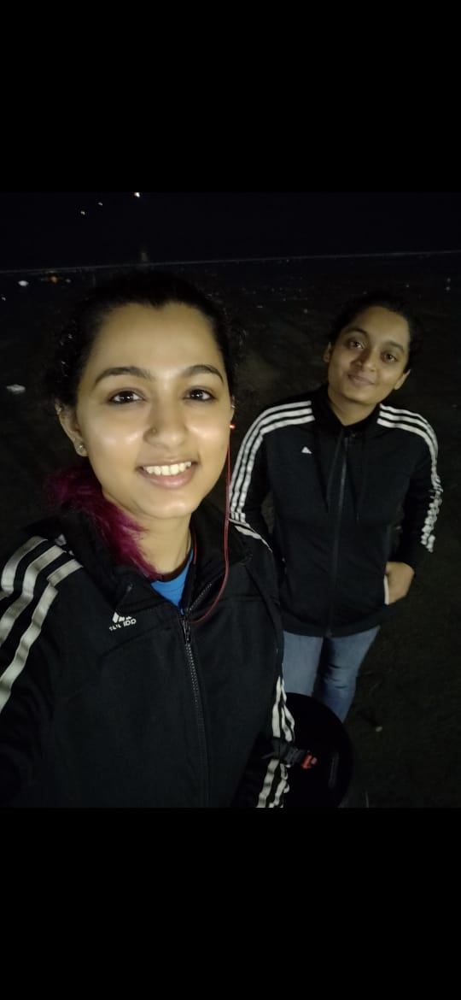
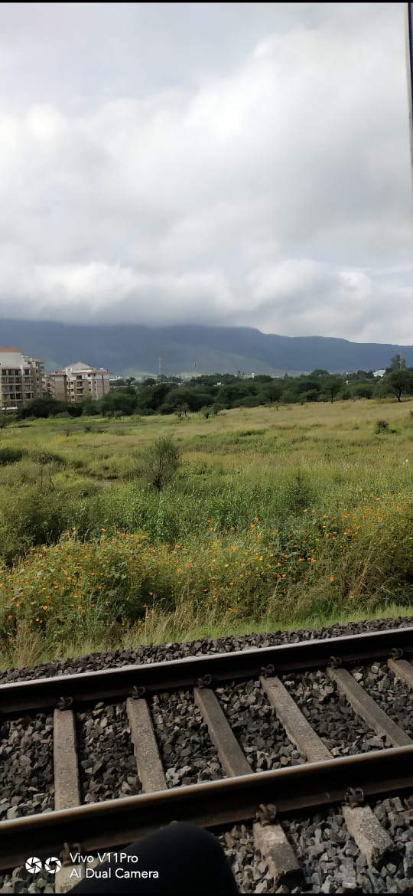
Happy Birthday Boo!
I don’t know what to write, that you already don’t know But anyway I will try my best.
We have know each other since 6th Std. Literally 6th Std. Do you know how long that is? Almost 12 years. More than
a decade!!
We have been through school, college together, graduation , internships and now jobs
We were there with each at every step.
We have so many highs and lows together, and we have supported each other at every step.
I don’t remember much about how we first met or the time when I first saw you
But this is the movie that always replays in mind whenever I remember it
It might be completely different than what happened that
day, but this my story about you! so back off Kshitija Mohite :)
6th Std in the large assembly room, you were there on the stage along with Shubham Advait and 1 more.
I was there in the crowd. Sitting in line of the
class that you were about to join
The principal called your name out, and asked you to introduce yourself
You came up to the mic and started telling us about yourself
Although it was a very brief introduction
and there was nothing special about it.
but I don’t know why, something sparked in me when I saw/heard you. It definitely wasn’t love or crush or anything of that sorts. But it definitely was something, because to this day
I can never understand what it was, and whenever I recall this scene, I always feel that same something feeling again in me. This movie like scene always makes me feel like maybe destines do exist and that maybe soul mates do exist.
I have seen you grow out of a very tall, introvert type, studious girl who always wore her Gucci glasses, with the max curly hair to see you almost win a beauty pageant at Garware, to lead our school team in basketball, and
then again in college and then to being the bravest girl I know, who can handle the most difficult of difficult times.
Remember Phadke? When she called your mother to tell her that something might be going on between us.
Who would have thought she would be right one day. Long live Phadke! Lol
I don’t know how to say in a different way but to just say that
I love you
Its always been you
From 6th Std till the end of our
lives
It was always you and always will be you
You are everything I ever wanted and everything that I will ever need
You are the best thing that has ever happened to me
You support me, you care for me, you understand
me and most importantly that you love me back a 1000 times more that I what I could ever do
I don’t care what the future holds for us, whether it be good or bad all I know is at this moment, I am with you and I that I am
the luckiest person of the planet, to see you before I go to sleep every night.
We have always been friends more than gf
You are my GF and you are my best friend also.
You are my goto person for anything and
everything,
You are my 3AM and my 3PM
You are mine and only mine
The current year has been very tough for you, you hit rock bottom, and then when you thought things couldn’t get worse, they got worse for and then to worst
But the way you handled
the situation, they way you supported your family and everyone, I don’t think I or anyone ever could have done it
But I want you to know that you are not alone
We are there for you
All these people that have written
all these things about you, we are all there for you. You will always have us.
No matter how bad or good things are, we will always be there for you. looking after you and being there with you, because you have done the same
for us for so long.
Whenever things get bad, I want you to come look at this website and remember all the beautiful people and moments that you have to share with us I wish we all could come and hug you while you are reading
this and see the look on your face
Happy Birthday again!! May you have all the happiness in the world, because you deserve it more than anyone 🥰
Happiest birthday to you dear. The moment's that cherish with you the most are 1) Trek - The first time where only cousins where allowed to go on a trip. The memorable one. I guess that's were our actual bonding started. You motivated
me to continue the trek 2)Shibir- One hell of experience. The best memories be it waking up early, running being scared of the monkeys or that mad shree ram. I remember the incident of hiding and risking our lives from the both.
Not to forget the laddu phekne.. that was the best.. I felt bad for massi but it was the only choice 😜. 3)Staying at your place during my job. We got the closest during that period. The cherish those days a lot. There are many
more but these stand out. Stay happy and wish you all the luck. ❤️